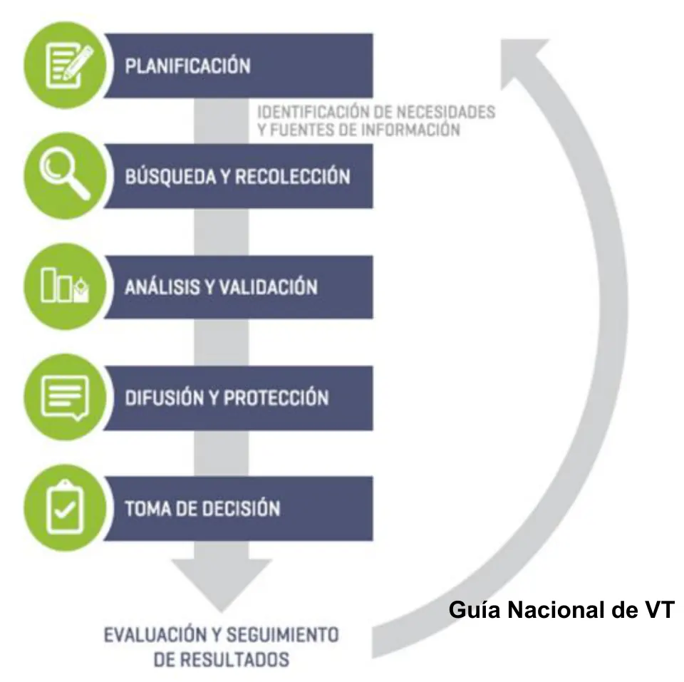
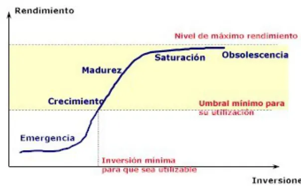

El Santo Resumen
Formación de Emprendedores
Ingeniería en Sistemas, UTN
Qué tiene
De dónde sale
Resumen armado a partir del material de cursado 2026 del Drive de UTN. En el Drive no hay exámenes: la materia se aprueba con el TPI. No reemplaza lo que indique tu comisión: si las condiciones cambiaron, manda la cátedra.
Los quiz, los ejercicios de examen y las figuras que se mueven están en la web.
Formación de Emprendedores
Para entender
Una electiva sin parciales: aprobás armando un proyecto productivo real, de la idea hasta el presupuesto.
Resumen no juzgado. Todavía nadie evaluó si alcanza para estudiar solo con esto.
Materia del pasado. Ya no está en el plan de estudios.
En el Drive no hay ningún examen
Miré el índice de los 49 archivos que se pudieron bajar, de la carpeta de cursado 2026, y abrí lo de cada clase. Ninguno es un parcial ni un final. El instructivo 2026 confirma que la materia se aprueba con el trabajo práctico. Por eso acá no hay cuentas de «cuántas veces se tomó» ni página de ejercicios. Los bloques de lo que se toma y el amarillo marcan lo que pide el TPI 2026.
La idea general
La materia te hace pensar como alguien que va a abrir una empresa de verdad. Elegís un proyecto y lo analizás con un conjunto de herramientas. Cada herramienta usa lo que encontró la anterior. Al final, un presupuesto te dice si los números cierran.
La frase que cierra la clase de herramientas lo resume. «Un negocio no planificado es un negocio planificado para fracasar» (Clase 4, Herramientas, diap. 14).
Es transversal a todas las ingenierías de la facultad. Por eso el foco no está en la programación, y el proyecto puede ser de cualquier rubro. Eso sí, tiene que ser productivo. La cátedra valora la profundidad del análisis, no la simpleza de la idea.
En criollo
Pensalo como sacar una radiografía de un negocio antes de poner plata. Primero mirás quién está alrededor (proveedores, canales, clientes). Después, contra quién competís. Con eso sabés qué tenés a favor y en contra. Recién ahí decidís quién querés ser y hacés las cuentas.
Cómo se aprueba
Todo sale del instructivo de cursado 2026, página 1.
| Condición | Qué te piden |
|---|---|
| Regularidad | 70 % de asistencia, y la idea de emprendimiento aprobada junto con la cadena de valor |
| Aprobación directa | 70 % de asistencia, y el trabajo completo aprobado antes de que termine el cuatrimestre |
| Libre | Quien no cumpla ninguna de las dos |
Si quedaste regular, seguís con el trabajo hasta terminarlo. Cuando te lo aprueban, te anotás en la mesa más cercana y suben la nota. En ningún caso hay defensa del trabajo.
Otros datos del cursado 2026:
- Grupos de 2 alumnos como máximo (instructivo, pág. 2).
- Las consultas y las entregas van por el mail de la cátedra, que está en el instructivo.
- Todo el material nuevo aparece en el repositorio de la cátedra.
- Correlativa, según el programa: Ingeniería y Sociedad aprobada.
El programa del Drive es de 2020 y dice otra cosa
El programa de 2020 habla de un examen final que es la defensa del trabajo, y de trabajos prácticos aparte. El instructivo 2026 dice que no hay defensa y solo pide el TPI. Para las condiciones seguí el instructivo. Del programa tomé solo los contenidos.
El recorrido
El TPI ordena casi toda la materia. Estas son las diez cosas que pide el instructivo y la clase donde se ven.
| Punto del TPI | Herramienta | Clase |
|---|---|---|
| 1 | Idea justificada con búsqueda de información | 2, 5 y 7 |
| 2 | Cadena de valor externa | 4 |
| 3 | Diamante de Porter | 4 y 8 |
| 4 | FODA con acciones y valoración | 6 |
| 5 | Valores | 6 y 8 |
| 6 | Objetivos a corto, mediano y largo plazo | 4 y 8 |
| 7 | Misión y visión | 9 |
| 8 | Estrategias comerciales | 10 |
| 9 | Presupuesto anual, mes por mes | 10 |
| 10 | Conclusión final | Al cierre |
Las clases 1 a 3 son la base. Hablan de la actitud emprendedora, de cómo priorizar y del planeamiento estratégico.
Cómo se conecta
Cada paso le pasa información al siguiente, y por eso el orden importa.
- La cadena de valor externa te muestra todos los actores del negocio, con nombre y contacto.
- El diamante estudia la competencia y la tecnología, y compara tu cadena con la de los competidores.
- El FODA se arma con lo que encontraste en los dos pasos anteriores. No se saca de la cabeza.
- Los valores, objetivos, misión y visión dicen hacia dónde va la empresa.
- Las estrategias comerciales dicen cómo vas a vender.
- El presupuesto pone números. Te dice cuánto hay que vender como mínimo para que el proyecto se sostenga.

Fuente: Clase 9, Misión y visión, pág. 2. La visión y la misión ordenan todo lo de abajo, y el análisis externo e interno las alimenta.
Qué se evalúa y cómo
Los docentes corrigen el TPI. No encontré una grilla de corrección en el Drive, pero el material dice qué se busca:
- Se valora la investigación de campo, las entrevistas, los datos reales y el contacto con actores del sector (comunicado de elección de proyecto, Clase 1).
- Cada herramienta lleva una conclusión sobre para qué te sirvió (instructivo, pág. 2).
- El presupuesto tiene que permitir decidir, no solo sumar (Clase 10, Un presupuesto para una idea de negocios, diap. 3).
Conviene mandar la idea y la cadena de valor temprano. Son lo que te da la regularidad.
Lecturas y videos de la cátedra
No hay ningún examen sobre ellos, pero la cátedra los deja en el repositorio.
- Libros: El mito del emprendedor (Gerber), Gung Ho (Blanchard y Bowles), Ágilmente y En cambio (Bachrach). Lo central de los dos primeros está en esta sección.
- Videos sobre actitud emprendedora: lista de la Clase 1 y lista de la Clase 8.
- Consulta para el TPI: Guía Nacional de Vigilancia e Inteligencia Estratégica y La matriz FODA.
Formación de Emprendedores
Trabajo Práctico Integrador
Qué pide cada punto del TPI y toda la teoría para hacerlo, herramienta por herramienta.
Resumen no juzgado. Todavía nadie evaluó si alcanza para estudiar solo con esto.
Materia del pasado. Ya no está en el plan de estudios.
Qué hay que entregar
- Presentación de la idea, justificada con búsqueda de información del negocio, usando distintas herramientas de búsqueda y análisis de la información.
- Cadena de valor externa.
- Diamante de Porter.
- FODA + acciones estratégicas para cada pilar + valoración.
- Valores.
- Objetivos a corto, mediano y largo plazo.
- Misión y visión.
- Estrategias comerciales.
- Presupuesto anual, discriminando mensualmente las erogaciones e ingresos.
- Conclusión final del trabajo.
Cada herramienta debe tener una conclusión al final sobre la utilidad que tuvo en el desarrollo del punto. El grupo es de 2 alumnos como máximo.
La materia se aprueba con este trabajo. Para quedar regular alcanza con tener aprobadas la idea y la cadena de valor, además del 70 % de asistencia. El detalle está en Para entender.
Cómo se presenta
- Cada tema es como un capítulo y empieza en hoja nueva.
- Títulos y subtítulos bien distinguibles.
- Cada capítulo lleva introducción y conclusión.
- Márgenes «Normal», letra Arial 12, «justificado a la derecha» (así lo escribe la diapositiva).
- Carátula con el modelo de la cátedra: título, especialidad, alumnos, legajos, teléfono, mail, año y cuatrimestre.
La misma clase pide cuatro condiciones para que el trabajo sirva (diap. 3):
| Condición | Qué significa |
|---|---|
| Calidad de la información | Clara, concisa, veraz y comprobable |
| Actualidad | Datos actualizados. Un desfase, aun pequeño, lo vuelve poco útil en proyectos de alta tecnología |
| Totalidad | Abarca todas las áreas de la actividad |
| Unidad de criterio | Se entiende desde inversores y bancos hasta técnicos |
Si tu proyecto es muy técnico
La diapositiva 3 pide un esfuerzo especial para acercar la terminología a un lenguaje que entiendan todos. Si hacés software, no escribas para otro programador.
Qué proyecto sirve
Tiene que generar un bien o un servicio con un proceso estructurado. Quedan afuera las ideas superficiales o de poco desarrollo. El comunicado da tres ejemplos: reventa simple, servicios sin diferenciación e ideas sin validación real.
Debe tener estas características:
- Incorporar tecnología (digital, industrial o de procesos).
- Usar mano de obra, con un equipo definido.
- Requerir materias primas o insumos.
- Implicar inversión, sin restricciones presupuestarias.
- Tener potencial de escalabilidad.
- Considerar exportación o expansión a otros mercados.
- Permitir el análisis estratégico completo (cadena de valor, FODA, Porter).
Los tipos que sugiere el comunicado son alimentos con valor agregado, productos industriales, agroindustria o economía circular, y soluciones tecnológicas (AgTech, FinTech, HealthTech). También producción sustentable, indumentaria escalable, plataformas digitales con base en servicios productivos, logística, producción cultural y proyectos de triple impacto.
La clase de presupuesto agrega las premisas del proyecto (diap. 2). Tiene un líder o gerente. Ese líder trabaja en él al menos 8 horas por día y vive de lo que gana con el negocio. Tiene que ser realizable, no teórico.
El emprendedor y la oportunidad
Es la teoría de las primeras clases. El TPI no la pide como punto aparte, pero explica cómo elegir la idea.
Qué es un emprendedor
La cátedra da tres definiciones (Clase 2, Actitud y aptitud 2025, diap. 3):
- «Aquella persona que identifica una oportunidad y organiza los recursos necesarios para ponerla en marcha; dispuesta a correr riesgos, empecinada en la búsqueda constante de nuevas ideas, nuevas formas de hacer y desarrollar las cosas.»
- «Un individuo que es capaz de llevar a cabo un proyecto. Sabe interpretar las características reales del entorno y ver en ellas la oportunidad para la realización de un negocio. Afronta desafíos y no le teme al fracaso.»
- «Toda persona capaz de concebir un proyecto propio y ponerlo en marcha más allá de los recursos que tenga disponibles. Es quien hace que las cosas pasen.»
Lo que tienen en común (diap. 4) es concebir proyectos a partir de oportunidades, interpretar el entorno real, no temer al fracaso, arrancar más allá de los recursos y saber lo que se hace.
Emprender «no es una ciencia, no es un arte, no es un tema de personalidad». Es una actitud, un comportamiento, y puede modificarse mediante la educación (diap. 6).
| Tema | Qué dice la cátedra | Diap. |
|---|---|---|
| Características | Perseverancia, determinación, visión, compromiso, iniciativa, autoexigencia, pasión, coraje | 7 |
| El fracaso | Suele ser más frecuente que el éxito. Desde ahí se perciben nuevas oportunidades. Puede fracasar la empresa, nunca el emprendedor | 8 |
| Emprendedor habitual | Busca oportunidades con pasión, las persigue con disciplina, va solo por las mejores, se enfoca en ejecutar e involucra a todos | 9 |
| Motivaciones | Logro, poder y afiliación | 12 |
| Objetivos | Realistas, medibles, orientados a la acción, específicos y temporales | 12 |
El proceso emprendedor
Estas son las etapas de la diapositiva 11, en el orden en que se recorren:
- Decisión de ser emprendedor.
- Selección de la oportunidad.
- Análisis preliminar del emprendimiento, con cadena de valor, diamante y FODA.
- Misión, visión, objetivos, políticas e índices de valoración.
- Preparación del plan de negocios.
- Primeros años de operación y crecimiento.
- Éxito personal, éxito de la empresa y desarrollo.
Qué es una oportunidad
«Un estado futuro deseado y posible, distinto al actual» (diap. 14). Depende de la persona, del equipo, del entorno, del acceso a los recursos y del momento oportuno. Una oportunidad es atractiva, durable, acotada en el tiempo y anclada en un producto o servicio que crea o agrega valor al cliente.
Las ideas pueden venir de varios lados (diap. 13): el trabajo, la investigación, un hobby, una búsqueda deliberada, la universidad, un cliente, un competidor, un proveedor, un encuentro social o la compra de un negocio existente.
Los factores críticos de éxito que lista la misma diapositiva son equipo, estrategia, tecnología, proveedores, producción, ventajas legales, competidores, barreras de entrada y de salida, y distribución del riesgo.
El dominio personal
Son tres pasos de desarrollo personal (diap. 15 a 19):
- Autoconocimiento. Saber por qué actuamos como actuamos. Según Seagal, todos nacemos con un desbalance natural entre capacidades mentales, emocionales y físicas.
- Visión personal. El futuro que deseamos para nuestra vida. Exige ver con más claridad la realidad actual.
- Tensión creativa. La brecha entre la visión y la realidad genera energía. Se resuelve de dos modos, llevando la realidad hacia la visión o la visión hacia la realidad.
Tensión creativa no es tensión emocional
La emocional es angustia, desaliento o preocupación. Cuando aparece, se abandonan los sueños y queda la sensación de fracaso. La creativa te hace ver el fracaso como una prueba para aprender (diap. 18).
Quien logra ese dominio capitaliza tres fuerzas (diap. 19). Poder es la capacidad de acción. Seducción es generar en otros el juicio de que somos una posibilidad para ellos. Emocionalidad es reflexionar y actuar según los estados emocionales propios y ajenos.
¿Se nace o se hace?
La cátedra responde con Andy Freire (diap. 20). El talento es innato. Las metahabilidades son en parte modificables con tiempo y experiencia. Los hábitos técnicos son altamente modificables, como armar un plan de negocios o un equipo. La clave es impulsar tus fortalezas, reconocer tus debilidades y rodearte de talento complementario.
La idea y la búsqueda de información
La idea no se presenta sola. Se justifica con información del negocio, buscada y analizada con distintas herramientas.
La clase de planeamiento da los pasos concretos (Clase 8, Planeamiento 2023, diap. 6):
- Tener el mayor conocimiento posible del tema.
- Conversar con dueños, gerentes, vendedores y empleados, y saber escuchar.
- Hacer experiencia de campo. Visitar empresas y plantas, posibles clientes y proveedores, ferias, exposiciones y congresos.
- Ver si hay cámaras o revistas del sector.
- Hacer vigilancia tecnológica.
De dato a inteligencia
Es una cuestión de niveles (diap. 35):
| Nivel | Qué es |
|---|---|
| Dato | Elemento aislado del conocimiento |
| Información | Conjunto de elementos del conocimiento |
| Análisis | Información filtrada y evaluada |
| Inteligencia | Información analizada y orientada a la toma de decisiones |
El método tiene tres pasos (diap. 37). Ver es observar, vigilar y recoger información. Apreciar es analizar, comprobar, sintetizar, evaluar y descartar. Resolver es tomar decisiones, comunicar y utilizar.
«No es una cuestión de saber todos de todo.» El objetivo es dar buena información a la persona idónea en el momento adecuado. Por eso la empresa decide primero en qué áreas y temas quiere estar informada, cuáles son las fuentes y qué tratamiento le da a lo que junta. Lo importante es obtener resultados, no acumular (diap. 43).
Vigilancia e inteligencia estratégica
El problema de partida es el exceso de información en internet. La respuesta es sistematizar y organizar la búsqueda (Clase 5, Vigilancia tecnológica, pág. 5).
«Se define a la vigilancia e inteligencia como un proceso ético y sistemático de recolección y análisis de información acerca del exterior y del interior de la propia organización» (pág. 10). Esa información se selecciona, analiza, difunde y comunica. El fin es convertirla en conocimiento para tomar decisiones con menor riesgo y anticiparse a los cambios.
La inteligencia estratégica (pág. 9) es un sistema organizacional para gestionar la innovación desde el planeamiento estratégico. Se basa en información del pasado, presente y futuro. Usa tres disciplinas: la vigilancia tecnológica (VT), la inteligencia competitiva (IC) y la prospectiva.
Los tipos de vigilancia salen de los aportes de Porter (pág. 12):
| Tipo | Qué mira |
|---|---|
| Tecnológica | Tecnologías disponibles o recién aparecidas, capaces de intervenir en nuevos productos o procesos |
| Competitiva | Competidores actuales y potenciales |
| Comercial | Clientes y proveedores: necesidades, solvencia, productos nuevos |
| De entorno | Hechos exteriores que condicionan el futuro: lo social, la política, el medio ambiente, las reglamentaciones |

Fuente: Clase 5, Vigilancia tecnológica, pág. 14.
La Guía Nacional explica las fases (pág. 66 y 67). En la planificación definís qué tipo de estudio hacés, qué fuentes vas a monitorear y con qué herramientas. La búsqueda se apoya en buscadores y en bases de publicaciones científicas y de patentes. La vigilancia no termina con el análisis. Se cumple cuando la información llega a quienes deciden. La decisión la toman personas con conocimiento. Para una PyME, muchas herramientas son gratuitas.
Cómo se arma una vigilancia: exoesqueletos
Una empresa de productos médicos quería saber sobre exoesqueletos portables de miembro inferior.
- Qué se buscó: patentes, publicaciones científicas, grupos de investigación, proyectos, empresas y ferias.
- Con qué palabras clave: en dos idiomas, como «exoesqueleto», «órtesis activa», «exoskeleton» y «lower limb».
- Período: 2006 a 2016.
- Qué encontró: 1156 patentes y 419 publicaciones. La mayoría de las solicitudes eran de China, muchas de universidades.
- Qué permitió: conocer otros nichos para migrar el producto, los grupos de investigación, las empresas de punta y hacia dónde va la tecnología.
Clase 7, VTeIE 2025. Clase 5, Vigilancia tecnológica, págs. 21 a 31
Cadena de valor externa
En este curso solo se analiza la cadena de valor externa. Con la idea, es lo que te da la regularidad.
Para el TPI hay que mapear todos los eslabones e identificar a todos los actores externos, no solo los obvios:
- Proveedores directos, y los proveedores de tus proveedores (Tier 1, 2 y 3).
- Logísticos: almacenamiento, transporte, distribuidores.
- Canales de venta: minoristas, mayoristas, marketplaces, venta directa.
- Tecnológicos y de servicios: desarrollo externo, agencias de marketing, consultoras.
- Clientes finales: quién usa el producto, y si agrega valor después.
Todos los actores deben tener sus contactos completos: dirección, mail, teléfono.
De dónde viene el concepto
Porter (1985, Ventaja Competitiva) propuso que una empresa hace una serie de actividades para diseñar, producir, comercializar, entregar y apoyar su producto (diap. 2). Según él, el negocio de una empresa es el que resulta de su cadena de valor. Las diferencias entre las cadenas de los competidores son una fuente clave de ventaja competitiva (diap. 3).
Una cadena de valor descompone las actividades en etapas para ver cómo cada una agrega valor. Va desde la adquisición de materias primas hasta la entrega al cliente (diap. 4).
Qué la hace externa
Ninguna empresa trabaja aislada. El valor que recibe el cliente final resulta de la colaboración de muchos actores (diap. 6). La definición de la cátedra:
«Es una red interconectada de actividades que se extiende más allá de los límites de la empresa, integrando las cadenas de valor de sus socios externos (productores, proveedores, distribuidores, clientes) para crear y entregar valor al cliente de la manera más eficiente y efectiva» (diap. 8).
El esquema básico de esa diapositiva es este:
Proveedores primarios > Proveedores > EMPRENDIMIENTO > Canal de comercialización > ClienteEn criollo
La interna mira adentro de tu empresa. La externa mira todo el camino, de la materia prima hasta las manos del que usa el producto. Si vendés pan, tu cadena externa arranca en el molino y termina en la persona que lo come, pasando por quien lo reparte.
Para qué sirve
El objetivo es identificar dónde la empresa puede ser más eficiente y eficaz (diap. 5). Eso se logra de dos formas, aumentando el valor percibido por el cliente o reduciendo costos. Además, permite comprender el comportamiento de los costos, las fuentes de diferenciación y la productividad y competitividad.
Las oportunidades que suele mostrar (diap. 20) son reducir costos, mejorar calidad con un proveedor, co-crear con un socio tecnológico, ganar en sostenibilidad y comparar tu cadena con la de la competencia.
Enfoque estratégico en cinco pasos
Están en la diapositiva 7.
- Analizar las actividades de la empresa, con su importancia y su costo.
- Identificar los factores críticos de éxito: calidad, eficiencia, innovación, plazos de entrega.
- Identificar oportunidades de mejora, como nuevos proveedores o el desarrollo de proveedores.
- Desarrollar una estrategia para cambiar la cadena y mejorar la competitividad.
- Implementarla: proveedores internacionales, integrarse hacia atrás o adelante, nuevos mercados.
Eslabones, beneficios y riesgos
Los eslabones son fuente de ventaja competitiva (diap. 10). Los horizontales son interacciones entre actividades de la cadena. Los verticales son interacciones con el sistema de valor. La ventaja se consigue por optimización (mejorar una actividad que influye en otra) o por coordinación (coordinar actividades para que sean más eficientes).
| Beneficios de gestionarla bien | Riesgos y desafíos |
|---|---|
| Menos costos y tiempos de ciclo | Pérdida de control sobre procesos críticos |
| Más flexibilidad ante disrupciones | Reputación: los errores de un socio te afectan |
| Acceso a innovación externa | Más complejidad de coordinación |
| Mejor calidad final | Fuga de información confidencial |
| Ventaja competitiva difícil de imitar |
Fuente: diap. 11.
Un canal mal gestionado puede arruinar un producto excelente (diap. 9).
Dos casos de la cátedra
- Apple diseña, pero no fabrica. Sus socios son Foxconn (ensamblaje), TSMC (chips) y Samsung (pantallas). Sus canales son tiendas propias, operadoras y comercios.
- Zara integró su cadena con proveedores locales en España y Portugal, y comunica en tiempo real tiendas, diseño y producción. Lleva tendencias a las tiendas en 2 semanas.
- General Motors en Alvear recibe los asientos de Johnson Controls justo a tiempo. Es un ejemplo de alineamiento estratégico.
Clase 4, Cadena de valor, diap. 12 a 15
De la compra suelta a la alianza
Sin alineamiento hay estructuras estancas y proveedores no alineados frente a requerimientos cambiantes de los clientes. La salida es una alianza de largo plazo (diap. 14 y 15). Varias PyMEs pueden armar una red (diap. 16) para comprar o contratar servicios con más fuerza de negociación. También pueden aliarse para conquistar un mercado o hacer publicidad que solas no podrían.
Primeros pasos para implementarlo (diap. 17): mapear la cadena, evaluar quién agrega valor y quién es cuello de botella, fortalecer la comunicación e invertir en tecnología. Ahí entran SRM, software para gestionar el ciclo de vida de los proveedores, y SCM, sistemas para planificar y controlar el flujo de materiales, información y finanzas.
El capítulo de socios estratégicos agrega una condición (pág. 27). Los socios deben compartir equitativamente riesgos, costos y logros. Si no, ninguna alianza resiste mucho tiempo.
Integración vertical y horizontal
Fuente: diap. 18 y 19.
| Horizontal | Vertical | |
|---|---|---|
| Qué es | Aumentar cuota al mismo nivel de la cadena, adquiriendo o fusionándose con competidores | Tomar control de más partes de la cadena, en distintas etapas |
| Busca | Participación de mercado, menos competencia, economías de escala | Control, eficiencia, menos dependencia externa |
| Tipos | Ver el aviso de abajo | Hacia atrás (a proveedores), hacia adelante (a clientes), completa (ambas) |
| Ejemplos | Microsoft y LinkedIn. Disney y 21st Century Fox | Ford y sus acerías (atrás). Apple y sus tiendas (adelante). Tesla (total) |
Errata del apunte
La diapositiva 19 de Cadena de valor imprime que la integración horizontal «puede ser hacia adelante o hacia atrás», con empresas más cerca del cliente o de la materia prima. Eso choca con su propia definición, que dice «en la misma etapa de la cadena de valor». Por eso no lo puse en la tabla. Adelante y atrás quedan solo en la vertical.
La cadena interna, solo para conocerla
La interna divide las actividades de la empresa en primarias y de apoyo (Clase 4, Cadena de valor, diap. 2 y 22):
- Primarias: logística interna, operaciones, logística externa, marketing y ventas, servicio postventa.
- De apoyo: infraestructura, recursos humanos, desarrollo tecnológico, adquisiciones.
La cátedra entiende por valor «aquello que el cliente está dispuesto a pagar».
No la pongas en el TPI, aunque una clase la muestre
La diapositiva 21 dice «no los vamos a aplicar en el TPI». El tamaño de empresa desde el que se usa cambia según el archivo: más de 30 trabajadores (Cadena de valor, diap. 23), 20 a 30 (Presupuesto, diap. 4) o 10 o más (Planeamiento 2023, diap. 17). Lo que coincide es que no es para un emprendimiento que arranca.
Diamante de Porter
Se estudia el entorno y la competencia, y el factor tecnología. Se compara tu cadena de valor con la de tus competidores. La clase de presupuesto lo llama benchmarking y pide mirar líderes de mercado y alguna posibilidad de innovación (Clase 10, diap. 4).
La cátedra lo llama «diamante de la productividad-competitividad del emprendedor» (Clase 8, Planeamiento 2023, diap. 15). Son las cinco fuerzas de Porter, con la tecnología agregada. La pregunta de fondo es qué tan atractiva es la industria en la que querés entrar.
Cuanto más intensas son las fuerzas, más difícil es competir y menos rentable es la industria (Clase 4, Herramientas, diap. 6). Esto es lo que hay que analizar en cada una (diap. 7):
| Fuerza | Qué analizar |
|---|---|
| Poder de negociación de los clientes | Tamaño y concentración, volumen de compra, sensibilidad al precio, dependencia de canales |
| Poder de negociación de los proveedores | Cantidad disponible, diferenciación de los insumos, costo de cambiar, importancia del insumo |
| Amenaza de nuevos entrantes | Economías de escala, diferenciación, costos de cambio para el cliente, barreras legales o de capital |
| Amenaza de sustitutos | Alternativas disponibles, diferenciación percibida, relación precio y desempeño, propensión a sustituir |
| Rivalidad entre competidores | Cantidad y tamaño, crecimiento del mercado, diferenciación, barreras de salida |
El diagrama de la cátedra suma estos elementos alrededor del centro (diap. 15 de Planeamiento 2023):
- La tecnología, y las amenazas de productos, servicios o tecnologías sustitutos.
- El grado de rivalidad y el reparto del mercado.
- El análisis de la cadena de valor y de las ventajas competitivas.
- La asociatividad del sector: cadenas de producción o clusters.
- Los parámetros que rigen la competencia, y conocer el negocio para identificar nichos.
Si lo buscás en internet
«Diamante de Porter» también puede traerte otro esquema con otro contenido. Para el TPI usá el de la cátedra, el de arriba.
En criollo
Imaginá que vas a poner un puesto en una feria. Mirás cuántos puestos parecidos hay, si los clientes pueden irse al de al lado por dos pesos y si tu único proveedor te puede subir el precio. También si alguien nuevo puede instalarse mañana y si hay otra cosa que reemplace lo tuyo. Eso es este análisis.
FODA
Entre 8 y 10 ítems en cada pilar, ordenados por importancia y ponderados, y con los escenarios estratégicos planteados.
Los pasos:
- Establecer claramente el objetivo del FODA.
- Análisis externo: amenazas y oportunidades.
- Análisis interno: debilidades y fortalezas.
- Matriz FODA plana.
- Valorar los ítems, y establecer estrategias, misión y visión.
- Plantear los escenarios.
Cuántos ítems: los archivos no coinciden
La clase de FODA pide 8 a 10 por pilar (diap. 26), y su plantilla trae 6 renglones (diap. 28). La de Herramientas dice «mínimo 3» (diap. 13). Seguí la clase de FODA, que es la específica para el TPI, y si te queda duda preguntá.
Qué es
«Es una herramienta que ayuda al proceso de planeación estratégica, y que se utiliza para comprender el escenario en el que se encuentra una empresa y proyectar su futuro» (diap. 2). Se arma con la información de la cadena de valor externa y el diamante (Pasos TPI 2026, diap. 5).
| Positivo | Negativo | |
|---|---|---|
| Interno (depende de vos) | Fortalezas | Debilidades |
| Externo (no lo controlás) | Oportunidades | Amenazas |
Cada pilar tiene ejemplos en las diapositivas 10 a 13:
| Pilar | Qué son | Ejemplos |
|---|---|---|
| Fortalezas | Recursos, capacidades y ventajas internas que te hacen destacar | Talento especializado, patentes o know-how, reputación, procesos optimizados |
| Oportunidades | Factores externos que, aprovechados, impulsan el crecimiento | Nichos emergentes, tecnologías nuevas, alianzas, incentivos fiscales |
| Debilidades | Aspectos internos que limitan el rendimiento | Capital insuficiente, cuellos de botella, baja visibilidad, problemas de flujo de caja |
| Amenazas | Factores externos que ponen en peligro la estabilidad | Competencia intensa, cambios regulatorios, crisis, ciberataques |
Lo que más se confunde
La pregunta es si depende de vos, no si es bueno o malo. «Baja la demanda» es externo, así que es amenaza. «Vendo poco porque no tengo marca» es interno, así que es debilidad.
Preguntas para encontrar cada cosa
Salen de las diapositivas 16 a 19.
- Internas: ¿Qué te diferencia de los competidores? ¿En qué sos más eficiente? ¿Qué recursos únicos tenés? ¿Qué procesos fallan? ¿Dónde tenés menos experiencia?
- Externas: ¿Qué tendencias te favorecen? ¿Qué necesidad no atiende la competencia? ¿Qué movimientos recientes de la competencia te afectan? ¿Dependés de pocos proveedores o canales?
Lista plana y matriz cruzada
La matriz plana es la lista de los cuatro pilares, F1, F2, F3 y así (diap. 5). La matriz desarrollada los cruza y de ahí salen las estrategias (diap. 6 y 21):
| Fortalezas | Debilidades | |
|---|---|---|
| Oportunidades | FO (Maxi-Maxi): usar las fortalezas para aprovechar las oportunidades | DO (Mini-Maxi): minimizar las debilidades para aprovechar las oportunidades |
| Amenazas | FA (Maxi-Mini): usar las fortalezas para reducir el impacto de las amenazas | DA (Mini-Mini): reducir las debilidades y evitar las amenazas |
El FODA dinámico repite el análisis en el pasado, el presente y el futuro, y da una visión de escenarios (diap. 7).
De diagnóstico a acción
«Por sí solo no ofrece soluciones» (diap. 22). El valor aparece cuando convertís el diagnóstico en acciones concretas. Por eso cada ítem del TPI lleva su acción.
Una tabla por pilar, con tres columnas: aspecto relevado, acción estratégica sugerida y ponderación.
- En debilidades la ponderación es leve, mediana, grave o muy grave.
- En fortalezas y oportunidades es leve, mediana, buena o muy buena.
La plantilla de amenazas (diap. 35) repite leve, mediana, buena y muy buena. Parece copiada de las anteriores, porque una amenaza «buena» no cierra. Consultá qué escala usar.
La cátedra sugiere armarlo con un equipo de distintos perfiles. Si trabajás solo o con pocos, asesorate con un mentor o un experto externo, y respondé con honestidad (diap. 15).
Ponderación numérica, fuera del TPI
La diapositiva 36 la titula «no entra en el TPI». Está por si te la cruzás. A cada ítem se le da un puntaje que se multiplica por un peso, y los pesos del pilar suman 1. Con eso salen dos balanzas: la endógena (fortalezas menos debilidades) y la exógena (oportunidades menos amenazas). Ubicadas en un gráfico, indican una actitud: agresiva, competitiva, conservadora o defensiva (diap. 37).
Errata del apunte
En la diapositiva 36 (Clase 6, Análisis FODA 2025), la hoja imprime T = 8 para oportunidades. Sus seis renglones (2,4 + 1,4 + 1 + 0,8 + 0,8 + 0,8) suman 7,2. El valor correcto de su propio ejemplo es 7,2, y la balanza exógena da 3,5 en vez de 4. Los otros tres totales cierran (7,7, 3,85 y 3,7).
Valores, objetivos, misión y visión
Valores, objetivos a corto, mediano y largo plazo, y misión y visión. El orden del instructivo es ese. Los objetivos tienen que ser medibles.
Forman parte de la cultura organizativa. Desarrollan la dinámica laboral y orientan principios y metas comunes (Clase 9, Misión y visión, pág. 3).
Misión
«La misión de una empresa es su razón de ser; es el propósito o motivo por el cual existe y, por tanto, da sentido y guía sus actividades» (pág. 4).
Toda misión contesta tres preguntas (pág. 7):
- ¿Qué? La necesidad que satisface o el problema que resuelve.
- ¿Quién? Los clientes a los que se pretende llegar.
- ¿Cómo? La forma en que se satisface esa necesidad.
Tiene que ser clara y sencilla, motivadora, decir a qué se dedica la empresa, ser congruente, diferenciarla de sus competidores y ser fácil de recordar (pág. 6).
Una misión de la cátedra
«Producimos alimentos saludables para familias que quieren comer mejor sin renunciar al sabor.» Contiene el qué (alimentos saludables), el quién (familias) y el cómo (sin renunciar al sabor).
Clase 4, Herramientas, diap. 3
Visión
«Una declaración que ayuda al emprendedor a seguir el rumbo al que se dirige a largo plazo» (pág. 9).
Tiene que ser clara y sencilla, entendible por el equipo, positiva e inspiradora, un desafío, realista, y estar alineada con la misión y los valores (pág. 10). La otra clase agrega que debe tener alcance geográfico y tener que ver con los valores (Clase 8, Planeamiento 2023, diap. 29).
Preguntas que ayudan (pág. 11): ¿Qué quiero lograr? ¿Dónde quiero estar en el futuro? ¿Para quién lo haré? ¿Ampliaré mi zona de actuación? ¿Qué recursos debo tener?
Una visión de la cátedra
«Ser la marca de referencia en alimentación saludable del Litoral argentino para 2030.» Es futura, tiene alcance geográfico y tiene plazo.
Clase 4, Herramientas, diap. 3
Misión o visión
La misión es lo que hacés hoy. La visión es lo que querés ser. Si tu misión tiene una fecha o un «ser líderes», seguramente es visión.
Objetivos y valores
Los objetivos son «resultados específicos, medibles y con plazo que traducen la visión en acciones» (Clase 4, Herramientas, diap. 3). El ejemplo de la cátedra: «Llegar a 500 clientes recurrentes en el primer año con ticket promedio de $8.000.» La misma clase los pide SMART (diap. 13). Otra clase los describe como realistas, medibles, orientados a la acción, específicos y temporales (Clase 2, Actitud y aptitud 2025, diap. 12).
Sobre los valores no hay una clase propia. Lo más concreto está en Gung Ho (Clase 6, pág. 107). «Las metas son para el futuro. Los valores son el presente. Las metas se fijan. Los valores se viven.» Solo se hacen realidad si actuás según ellos y exigís que los demás también.
Estrategia
«No existe ninguna definición universalmente aceptada» (Clase 8, Planeamiento 2023, diap. 27). La cátedra da varias, como «conjunto lógico de decisiones para tomar un determinado curso de acción para lograr objetivos». El diseño de estrategias integra visión, misión, valores, políticas y objetivos (diap. 34).
También sirve mirar la empresa como sistema (diap. 7 y 8). Tiene objetivos, una configuración, una actuación y un control que analiza desviaciones. Sus subsistemas son el real (aprovisionamientos, producción, marketing), el financiero y el directivo.
El entorno es todo lo que está más allá de los límites de la empresa (diap. 9 a 11). El genérico son los factores económicos, de intervención de gobiernos, socioculturales y tecnológicos. El específico es tu sistema de valor y tu sistema productivo competitivo, que se estudian con la cadena y el diamante.
El factor humano
Según la diapositiva 18 de esa clase, atraviesa todos los sistemas de la empresa. Las empresas siempre deben diagramarse a partir de él.
Estrategias comerciales
Hay que trazar estrategias de comercialización y de publicidad, y una estrategia general del negocio con objetivos medibles a corto y mediano plazo.
La cátedra da cuatro tipos para emprendimientos en fases iniciales (Clase 10, Comercialización, diap. 2 a 6):
| Estrategia | En qué consiste |
|---|---|
| Digital | Página web de distintos tipos, posicionamiento en buscadores y uso de redes |
| Uno por uno | Venta cara a cara con atención personalizada. Material impreso (tarjetas, carpeta, folletos) y detalle de los clientes archivado. Acá la diapositiva nombra a los «clientes ángeles» |
| Guerra de guerrillas | Estar donde el enemigo no está o es débil. Benchmarking comercial, análisis geográfico, de productos (diseño, packaging) y de servicios. Comercio especializado |
| Comunicacional por medios | Uso inteligente de medios masivos para consolidar marca y ser conocido. Contratar profesionales de psicología comunicacional |
La clase de presupuesto da dos premisas (diap. 15):
- «No vendo para vender una vez, vendo para ganar clientes y venderles siempre.»
- «La estrategia de ventas inicial del emprendedor es hacer clientes uno por uno con atención personalizada. Si tengo en ésta éxito puedo pensar en una venta masiva.»
Para pensarlo hay factores internos y externos (diap. 14). Los internos son quién vende, cómo se le paga, si se lleva los clientes si se va, y qué plazos, descuentos y postventa podés dar. Los externos son qué mercado y zona, y qué presencia tienen ahí los competidores.
Formatos comerciales
Si tu proyecto vende por minoristas, sirve ubicar el formato (Clase 10, Formatos comerciales). Un formato agrupa establecimientos con características parecidas de ubicación, superficie, surtido y atención. Hay comercio físico y sin presencia física (electrónico, catálogo, vending, teléfono).
| Formato de alimentación | Rasgos |
|---|---|
| Hipermercado | Más de 2.500 m², área suburbana, mucho estacionamiento |
| Supermercado | 400 a 2.500 m², 70 % de ventas en alimentación |
| Supermercado descuento | 300 a 900 m², surtido corto, marcas blancas y precios bajos |
| Tienda de conveniencia | Hasta 400 m², más de 15 horas abierta, precios 15 a 20 % más altos |
| Especialista | Una sola categoría de alimentación |
| Tienda independiente | No pertenece a una cadena, menos de diez tiendas |
Fuera de la alimentación están el comercio independiente, el bazar, los grandes almacenes (más de 2.500 m² con al menos cinco secciones), las medianas superficies, los centros comerciales, los big box (descuento, category killers, outlet, warehouse clubs) y las áreas duty free.
Costos
Te hacen falta para armar el presupuesto. Para que haya rentabilidad, los ingresos tienen que ser mayores a los egresos (Clase 10, Costos, diap. 2).
«Es el sacrificio, o esfuerzo económico que se debe realizar para lograr un objetivo» (diap. 3).
Costo, desembolso y amortización son cosas distintas
El costo es un concepto económico. Influye en el resultado. El desembolso es financiero. Es movimiento de dinero. La amortización se relaciona con la vida útil, el desgaste y la obsolescencia. Una inversión en equipos entra a los costos a través de sus amortizaciones (diap. 3).
Amortización de una máquina
Valor de compra de una máquina: $ 30.000 (inversión). Vida útil estimada: 5 años.
Amortización anual: 30.000 ÷ 5 años = $ 6.000 por año.
Amortización mensual: 6.000 ÷ 12 meses = $ 500 por mes.
Clase 10, Costos, diap. 5
Clasificaciones
| Según | Tipo | Qué es | Ejemplos |
|---|---|---|---|
| Función | Producción | Obtener bienes mediante un proceso de transformación | Materia prima, sueldos de producción |
| Función | Comercialización | Posibilitar la venta | Comisiones, fletes, personal comercial |
| Función | Administración | Gestionar el negocio | Personal administrativo |
| Función | Financiación | Obtener fondos | Intereses de préstamos |
| Variabilidad | Fijos | Constantes, sea cual sea el nivel de actividad | Alquileres, amortizaciones, seguros |
| Variabilidad | Variables | Varían en proporción a la producción | Materias primas, envases, comisiones |
| Asignación | Directos | Se asignan directo a una unidad. Por lo general se asimilan a los variables | |
| Asignación | Indirectos | Se reparten con algún criterio. En la mayoría de los casos son fijos |
Fuente: diap. 6 a 10.
Las fórmulas
Están en las diapositivas 11 a 13.
El costo fijo total es la suma de todos los costos fijos de la empresa.
Presupuesto
Presupuesto anual, discriminando mensualmente las erogaciones e ingresos. Tiene que servir para tomar decisiones (Pasos TPI 2026, diap. 6).
«Plan escrito en términos numéricos monetarios» (Clase 10, Un presupuesto para una idea de negocios 2024, diap. 7). Sirve para planear, coordinar y controlar. Es una primera aproximación numérica a los problemas económico-productivo-comerciales de la empresa (diap. 3).
12 o 24 meses
La clase dice que puede hacerse para 12 o 24 meses (diap. 17). El instructivo pide «anual». El mínimo es un año, abierto mes por mes.
Qué lleva
Fuente: diap. 8.
| Parte | Qué incluye |
|---|---|
| Inversión en bienes de producción | Inicial y diferida, repartida según un cronograma |
| Gastos por servicios | Electricidad, teléfono, seguros, internet, facturas, alquileres, contador |
| Materias primas | Consumo estimado del año |
| Packing | Papeles, cartones, impresiones |
| Logística | Nafta, patente, mantenimiento, fletes, alquiler de vehículos |
| Marketing | Publicidad, páginas web, papelería |
| Sueldos de empleados | Si hubiera |
| Retiros | Los retiros proyectados del año |
| Impuestos, tasas y habilitaciones | |
| Ventas | Las proyectadas del año |
- Los socios no cobran sueldo. Hacen retiros de dinero. Se proyectan retiros mínimos, y esos retiros implican ventas mínimas a realizar.
- No se tiene en cuenta la inflación. Sí se tiene en cuenta cómo varían los costos de materia prima y fabricación a medida que aumentás las ventas.
- El cuello de botella es la capacidad de ventas y cobranzas, más que la capacidad física de producir.
«Si no logro alcanzar estas metas debo pensar en abandonar el proyecto» (diap. 17). Por eso el presupuesto decide: ¿es posible vender esa cantidad? (diap. 11).
La plata inicial puede venir de recursos propios o de terceros (diap. 9 y 10): ahorros, préstamos de amigos o familiares, bancos o fondos especiales del gobierno.
Los ejemplos de la cátedra
Hay dos planillas en la Clase 10.
- Presupuesto Ejemplo Ing Sistemas es el modelo vacío para un negocio de sistemas, flujo de caja de 12 meses en dólares oficiales. Tiene costos fijos operativos (nube, certificado SSL, página web, licencias, internet, posicionamiento, electricidad, teléfono, alquileres). También otros variables e indirectos (monotributo, marketing y ventas, contador). Cierra con retiros mínimos, total de costos, ventas mínimas necesarias y cantidad de licencias.
- Presupuesto Ejemplo es un caso cargado de un taller que fabrica parrillas y planchetas, con presupuesto y ventas de dos años. Muestra costos variables, costos fijos, costo laboral, flujo de caja y retiros mínimos.
Lo que la planilla trae y las clases no explican
La hoja de referencia del segundo archivo tiene VAN, TIR y período de recupero, con la celda de TIR en error. Ninguna clase del Drive los explica. Si tu comisión los pide, preguntá cómo los quiere.
Partes del plan de negocios
La clase de presupuesto ordena el trabajo como un plan (diap. 4): introducción (quién soy, cuál es la idea, de dónde salió), cadena de valor del negocio y de la empresa, productividad y competitividad, FODA, estudio de mercado, misión, visión, objetivos, políticas, estrategia y presupuesto proyectado.
El programa lo define por sus usos: planificar, ejecutar y controlar. También menciona el modelo de negocio, el plan económico y financiero, y el «timing», el momento más conveniente para introducir un producto (programa 2020, unidad 4).
Modelo Canvas
El Business Model Canvas (Osterwalder, 2004) describe, diseña y evalúa un modelo de negocio en una sola página (Clase 4, Herramientas, diap. 8). Hay una plantilla en la Clase 1.
| Bloque | Pregunta | Qué va |
|---|---|---|
| Socios clave | ¿Quién te puede ayudar? | Aliados y proveedores clave |
| Actividades clave | ¿Qué hacés para dar valor? | Las tareas más importantes |
| Recursos clave | ¿Qué necesitás para operar? | Físicos, intelectuales, humanos o financieros |
| Propuesta de valor | ¿Qué hacés diferente? | El corazón del Canvas |
| Relación con clientes | ¿Cómo interactuás? | Asistencia personal, self-service, comunidad |
| Canales | ¿Cómo llegás? | Tienda física, web, distribuidores |
| Segmento de clientes | ¿A quién ayudás? | Sin cliente, no hay negocio |
| Estructura de costos | ¿Cuánto te cuesta operar? | Los costos más importantes |
| Fuentes de ingresos | ¿Cómo y cuánto cobrás? | Venta directa, suscripción, licencia, publicidad |
Fuente: diap. 9.
¿Va en el TPI o no?
La diapositiva 11 de Herramientas dice «en el TPI vas a usar todas», Canvas incluido, y la 13 lo pide. Pero el Canvas no está entre los diez requisitos del instructivo ni en las etapas del TPI 2026. Preguntale a la cátedra. Sumarlo no le hace daño al trabajo, y te ordena la idea.
Organizarse y liderar
Son las clases sobre cómo se gestiona uno mismo y a un equipo. El TPI no las pide como punto aparte.
Primero lo primero
Adaptado de Covey (Clase 3, Primero lo primero, diap. 2). La idea central es que el desafío no consiste en administrar el tiempo, sino en administrarnos a nosotros mismos (diap. 6).
Hay cuatro generaciones de la administración del tiempo (diap. 5 y 6): notas y listas; agendas; prioridades según valores, con planificación diaria; y la cuarta, centrada en el equilibrio.
Urgente significa que necesita atención inmediata y nos presiona. Importante tiene que ver con los resultados (diap. 8).
| Urgente | No urgente | |
|---|---|---|
| Importante | Cuadrante 1. Actuar, hacer. Crisis, proyectos con vencimiento, problemas apremiantes. Dedicación: 20 a 25 % | Cuadrante 2. Planificar, decidir. Planificación, prevención, estrategias, objetivos, capacitación. Dedicación: 65 a 80 % |
| No importante | Cuadrante 3. Delegar. Interrupciones, algunas llamadas y reuniones, asuntos impuestos por otros. Dedicación: menos del 15 % | Cuadrante 4. Posponer, eliminar. Trivialidades, WhatsApp, pérdidas de tiempo. Dedicación: menos del 1 % |
Fuente: diap. 7.
El cuadrante 2 es el corazón de la administración personal efectiva (diap. 8). Al principio, ese tiempo solo se saca de los cuadrantes 3 y 4. Hay que aprender a decir «no» a cosas que parecen urgentes (diap. 9).
Se organiza con cuatro actividades (diap. 14): identificar roles, elegir dos o tres metas por rol, programarlas en la semana y adaptarse día a día.
En criollo
Lo del cuadrante 1 te grita. Lo del cuadrante 2 nunca te grita, y por eso se posterga hasta que explota y se vuelve cuadrante 1. Estudiar con tiempo es cuadrante 2. Estudiar la noche anterior es cuadrante 1.
Delegación (diap. 16 y 17). En la delegación en recaderos decís cómo hacer cada cosa y el responsable sos vos. En la delegación en responsables te centrás en los resultados, no en los métodos. La otra persona elige cómo. Requiere acordar cinco cosas: resultados deseados, directrices, recursos, rendición de cuentas y consecuencias.
El mito del emprendedor
Gerber plantea que quien abre un negocio actúa como tres personas en una (págs. 29 a 35 del PDF):
- El emprendedor vive en el futuro y crea.
- El directivo pone orden y construye para que dure.
- El técnico es el hacedor y vive en el presente.
El supuesto fatal es creer que si comprendés el trabajo técnico de un negocio, comprendés el negocio (pág. 24). Vale también para quien programa bien y por eso cree que sabe llevar una empresa de software.
Gung Ho
Son tres ideas para motivar un equipo, de Blanchard y Bowles (Clase 6, resumen del libro, págs. 107 a 110).
| Idea | Qué dice | Sus puntos |
|---|---|---|
| El espíritu de la ardilla | Trabajo que vale la pena | Saber que contribuimos a mejorar el mundo. Una meta compartida. Valores como guía de planes, decisiones y actuaciones |
| El estilo del castor | Ejercer el control sobre el cumplimiento de la meta | Territorio claramente demarcado. Se respetan y escuchan pensamientos y necesidades. Capaces pero conscientes del desafío |
| El don del ganso | Darse ánimo mutuamente para seguir adelante | Congratulaciones de verdad. Si no hay puntuación no hay juego. Felicitar por el progreso |
Gestión de la tecnología e innovación
Está en el programa y en las clases 5 y 7. Los requisitos del TPI no la piden como punto, pero alimenta el factor tecnología del diamante, y el comunicado exige que el proyecto incorpore tecnología.
La curva en S
«Todas las tecnologías presentan una curva de desarrollo en forma de S», en la que mejora la productividad con el tiempo y las inversiones (Clase 5, Gestión de la tecnología, pág. 3).

Fuente: Clase 5, Gestión de la tecnología, pág. 3.
Las fases (pág. 2):
- Emergente. Parece prometedora.
- Crecimiento. Va madurando y se hace más útil.
- Madurez. Alcanzó el rendimiento adecuado para incorporarse a todo tipo de proyectos.
- Saturación. No se puede mejorar más su rendimiento.
- Obsolescencia. Otra tecnología la convierte en perdedora.
Tipos de tecnología
Fuente: pág. 3.
| Punto de vista | Tipo | Qué es |
|---|---|---|
| Estratégico | Clave | La empresa la domina y le da una posición de dominación frente a sus competidores |
| Estratégico | Básica | Consolidada y necesaria, pero sin ventaja porque también la conocen los competidores |
| Estratégico | Emergente | Inmadura. La empresa apuesta a que se vuelva clave. El riesgo es elevado |
| De un proyecto | Imprescindible | Sin ella no se puede realizar |
| De un proyecto | Conveniente | El proyecto saldría mejor con ella |
| De un proyecto | Auxiliar | Papel secundario. Ahorra tiempo y costo, y afecta poco las prestaciones |
Plan de actuación y diagnóstico
El Plan de Actuación Tecnológico (PAT) determina qué hacer con el recurso tecnológico a corto, medio o largo plazo (pág. 4). Tiene estrategias generales, a medio o largo plazo, y estrategias particulares, sobre las tecnologías actuales y las necesidades de los clientes. Para tecnologías de la información no se aceptan periodos de menos de un año ni de más de cinco (pág. 7).
Se accede a una tecnología de tres formas (pág. 7): acceso interno, mercado tecnológico controlado (centros de I+D o proveedores con acuerdos) y mercado abierto no controlado.
El diagnóstico tecnológico es la base del PAT. Valora la evolución en la empresa, la situación frente a los competidores y la adecuación a los objetivos. «Un diagnóstico en sí mismo es completamente inútil si se queda sólo en ello» (pág. 8). Sus procedimientos incluyen análisis de mercado, benchmarking, prospectiva, análisis de patentes y auditorías (pág. 9).
Transferencia y difusión
La transferencia de tecnología es pasar de la tecnología fuente a la objetivo. Termina cuando la nueva se usa de forma rutinaria o se certifica el fracaso (pág. 10). Sus problemas caen en tres tipos de barreras: tecnológicas, organizativas y personales.
La difusión es cómo se expande su uso (pág. 13). Macrodifusión es en una sociedad. Microdifusión es en una organización. Puede ser de semilla única (un grupo chico, y se sigue en círculos concéntricos) o de semilla múltiple (varios grupos a la vez, con difusión informal).
Innovación y protección
La cita clásica es de Schumpeter (La gestión de la innovación y la tecnología en las organizaciones, pág. 55). Innovar es introducir en el mercado un producto o proceso con elementos diferenciadores, abrir un mercado nuevo o descubrir una nueva fuente de suministro. El Manual de Oslo distingue la innovación de producto de la de proceso, cuyo objetivo principal es reducir costos (pág. 56).
El mismo libro explica el diseño dominante (pág. 164). El mercado reconoce un conjunto de características que ya no discute. Las mejoras de producto se detienen y toman importancia las de proceso. El número de empresas cae.
| Protección | Qué es | Pág. |
|---|---|---|
| Patente | Título de propiedad en exclusiva que concede el Estado por un tiempo. Pide novedad, actividad inventiva y aplicación industrial | 283 y 284 |
| Modelo de utilidad | Protege una invención de menor rango inventivo. Importa su forma y la ventaja técnica que da | 289 |
| Diseño industrial | Protege la apariencia, para satisfacer exigencias estéticas | 290 |
| Marca | Signos distintivos que identifican a la empresa o sus productos | 291 |
| Secreto industrial | Otra forma de proteger una invención, sin registrarla | 288 |
Plazos y leyes de otro país
Ese libro es de España. Los plazos legales que da no valen como norma argentina, y en el Drive no hay un apunte sobre la Ley de Patentes ni el PCT que nombra el programa.
El contexto de las PyMEs
El texto de Kosacoff y López (Clase 5, La innovación tecnológica) marca los obstáculos de las PyMEs argentinas frente a las empresas grandes. Les cuesta procesar información, están más expuestas a fallas de mercado y acceden menos a recursos humanos calificados. Propone modalidades asociativas, entre PyMEs o con firmas mayores, y fortalecer las cadenas de valor agregado.
También cuenta la clase de planeamiento (Clase 8, Planeamiento 2023, diap. 3) que pasamos de la era industrial a la del conocimiento, donde el factor estratégico es el capital intelectual: de la manufactura a la «mentefactura». Una organización tiene tres clases de conocimiento (diap. 43): tácito, personal y aprendido con la experiencia; explícito, expresado en documentos, código o reglas; y cultural, las creencias que comparte.